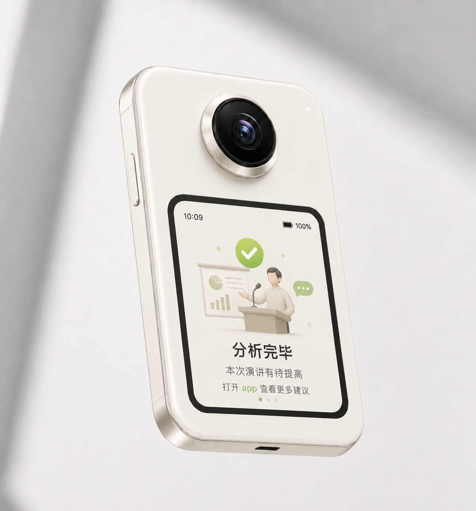
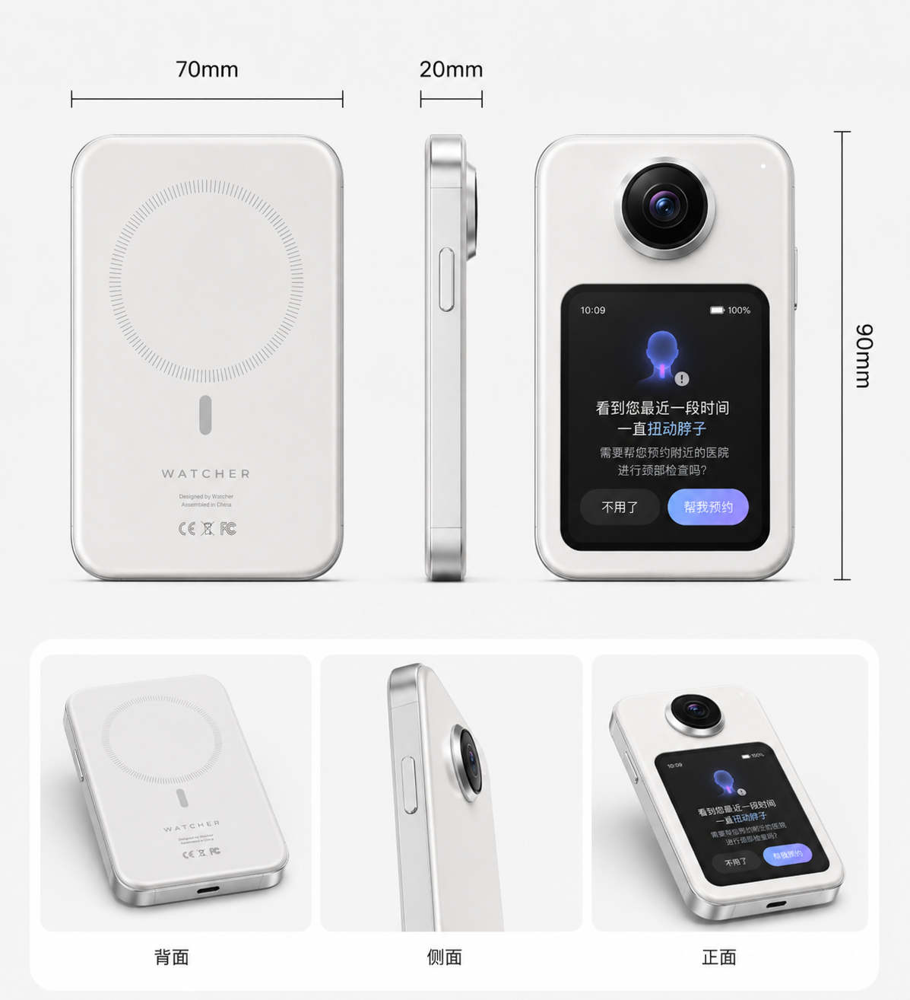
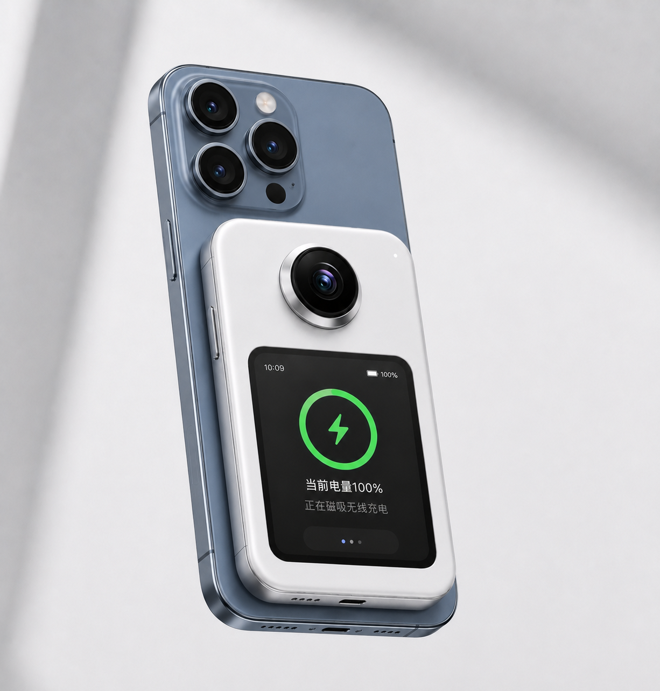

Audio
Speech, tone, sound, meetings, and ambient signals.
The Second Vision Node
for AI
AI cannot truly understand you, if it cannot see you.

AI today
The Missing Input
Speech, tone, sound, meetings, and ambient signals.
What your camera sees when you intentionally point it.
Body signals from wearables, sensors, and daily rhythms.
The outside view that watches events as they unfold.
Second Vision

Device Relationship
Interaction

Perception
People don't buy capability.
They buy outcomes.
Need a Validation Wedge
How to choose?
Candidates
Photography Candidate
MVP Workflow
Set the device near the bag, tripod, lens case, or booth.
Frame the protected area once from the phone.
Detect approach, removal, occlusion, and unusual motion.
Send a quick alert when attention should return.
Reality Check
Open Question
Is this the first product
for Watcher?